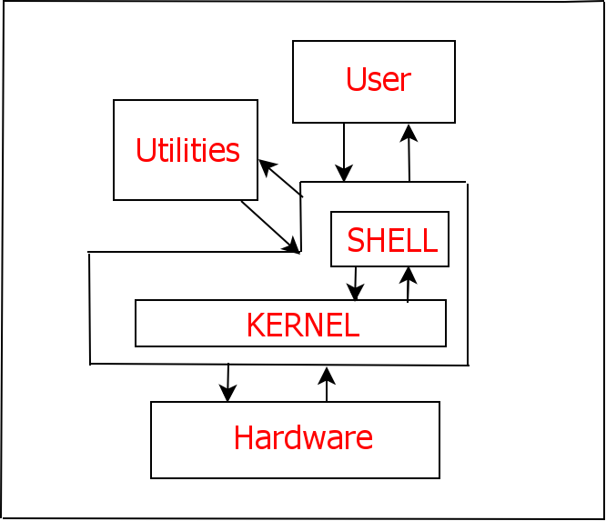

bash编程123
1 前言
因为有高级脚本编程语言了，所以不会专门钻研bash编程了，不过一些基础的东西还是要熟悉掌握的。高级编程语言比如说python，有时也是需要用subprocess模块来执行简单的一行bash命令来完成某些任务，还有Qt程序同样有时需要用QProcess来完成某些任务。
2 简单的python脚本演示
下面我们将编写一个小的python脚本，用os模块的stat函数来获取文件的大小，然后将其转换成为KB，MB或者GB这样的形式。
import os
import sys
filename = sys.argv[1]
filesize = os.stat(filename).st_size
for unit in ['字节','KB','MB','GB','TB']:
if filesize > 1024:
filesize = filesize/1024
else:
break
print(filename + '大小是' +str(int(filesize)) + unit)
具体的运行如下所示：
=>python3 filesize.py 鸟哥的linux私房菜.pdf 鸟哥的linux私房菜.pdf大小是22MB
关于上面数字大小具体说明如下：在计算机中存储的只有0和1这样的数字，其中0和1占了一位(bit)。然后所谓的一字节(B)是8个数字位(bit)，比如说python程序里面有一个bytes类型，就是指的一字节的意思。然后后面的KB，MB，GB，TB都是在这个字节单位的基础上的，比如1KB=1024B，1MB=1024KB…。
上面我们用os模块的stat函数查看文件属性，其中的st_size返回的就是文件的大小，其单位就是字节(B)。
2.1 python脚本成为系统命令
这样的脚本没啥意思，让我们将其装入系统中从而成为一个可以使用的命令吧。先把文件名改为filesize，当然首先要确认你的Linux系统没有这个命令，然后用pip来安装这个脚本吧，安装过程很简单，就是新建一个setup.py文件，内容简单写为如下：
from setuptools import setup
setup(
name='filesize',
version='0.01',
description='return filesize',
author='wanze',
author_email='a358003542@gmail.com',
license='GPL 2',
scripts=['filesize']
)
然后运行命令：
sudo python3 setup.py install
这个时候你的Linux就多了一个你自己定义的命令了，具体使用情况如下所示：
=>filesize unix编程艺术.pdf unix编程艺术.pdf 大小是 23.56 MB
但是就算我们要写一个非常粗糙非常粗糙的Linux命令行脚本，也别忘了两个选项， --help 和 --version ，当然出于简单的目的你可以不用考虑其他更加复杂的选项，但这两个选项都没有的命令会让人很失望的。
现在我们的filesize的python小脚本第二版是这个样子了：
#!/usr/bin/env python3
#-*-coding:utf-8-*-
import os
import sys
import getopt
__softname__ = 'filesize'
__version__ = '0.01'
def show_usage():
print('''usage: filesize [option] [filename]
-V : print the version number and exit(also --version)
-h : print this help message and exit(also --help)
''')
try:
opts , args = getopt.getopt(sys.argv[1:],"hV",["help","version"])
except getopt.GetoptError as err:
print(err)
show_usage()
sys.exit(2)
for o , a in opts:
if o in ('-V','--version'):
print(__softname__ , __version__)
sys.exit()
elif o in ('-h','--help'):
show_usage()
sys.exit()
else:
assert False, "unhandle option"
filename = args[0]
filesize = os.stat(filename).st_size
for unit in ['字节','KB','MB','GB','TB']:
if filesize > 1024:
filesize = filesize/1024
else:
break
print('%s 大小是 %.2f %s' % (filename, filesize,unit))
然后运行情况如下所示：
=>filesize --version filesize 0.01 =>filesize --help usage: filesize [option] [filename] -V : print the version number and exit(also --version) -h : print this help message and exit(also --help) =>filesize 鸟哥的linux私房菜.pdf 鸟哥的linux私房菜.pdf 大小是 22.05 MB
恩，似乎有那么一点样子了。这里主要就python中的getopt模块稍作讨论。这个模块里的getopt函数根据sys.argv[1:]，也就是接收到的除了本文件名后面的所有的内容，开始分析和过滤操作，并将分析结果传递给opts和args这两个变量。然后这个函数第二个参数是控制短选项的，比如这里填的hV，对应的就是 -h 和 -V ，然后第三个参数是控制长选项的，这里就是 --help 和 --version 。然后短选项哪里如果某个字母后面跟一个冒号，比如 i: ，那么你输入 -i what 就将刷进去，opts的结构如下[('-i','what')]，这样我们看到后面对opts进行迭代操作具体就是将前面的选项和后面的参数提出来了。
更多详细的内容请参与getopt模块的getopt官方文档 。
2.2 更加成熟的python脚本管理
更加成熟的python脚本管理是类似 这个项目 做的在setup.py文件中不要使用scripts，而是使用entry_points参数做自动生成系统可执行脚本，这样的方法可以设置多个程序入口，而且你写的模块里面的函数和类将很方便为其他python脚本调用。
3 什么是bash shell
shell就好像一个包装层，在shell的里面就是Linux操作系统的核心kernel，如果你要深入进去，将会遇到另外一个更加艰深的领域，比如计算机硬件啊，驱动程式啊还有Linux系统的设计核心等等之类的，这些知识都比较专业了，一般的人是不需要深究的。
Shell是提供操作系统核心（称为kernel）与用户之间交互的特殊程序，参见下图。这个kernel在启动时被装入内存,并管理系统直到关机为止。它负责建立和控制进程，管理内存、文件系统、通信等等。其他的实用程序，包括Shell在内都存储在硬盘上。kernel把程序从硬盘中装入内存，运行它们,并在程序运行结束后回收被程序占用的系统资源。Shell 是从你登录就开始运行的实用程序，它允许用户通过 Shell 脚本或者命令行的方式输入命令，并通过翻译这些命令完成用户与kernel的交互1 。

目前系统一般用的是Bourne Shell（bash shell），提示符是美元符号$。如果你使用Ubuntu系统，那么默认的就是bash shell，不过就算你使用的是其他Linux变种应该差异也不大，因为现在谁还一本正经的用shell编程啊，shell只是一个桥梁，既然现在出现了这么多很好的高级脚本语言，比如python，实在没必要死守住shell编程了。如果除开各个shell之间编程的语法差异等，可能就我们的使用体验上讲差异应该很小了。
3.1 管道
在简单介绍了shell的作用之后，具体引入shell是如何解析命令的，然后简单地说明下管道和重定向之类的概念。所谓管道最简单的理解就是第一个shell语句命令的输出流向到另外一个shell语句中取作为输入。比如说你的火狐浏览器卡住了，你需要看一下它的pid然后kill掉，那么可以如下查看：
ps aux | grep firefox
这个 | 就是所谓的管道概念，这里首先是 ps aux 语句，然后输出送入到grep语句中去，抓取具体包含firefox字符的匹配行。
3.2 重定向
kernel处理的每一个进程都默认都0，1，2这样三个文件说明符。其中0表示标准输入，1表示标准输出，2表示标准错误输出。
当文件说明符被分配给其他非终端，就叫做I/O重定向。Shell通过关闭标准输出，并把标准文件说明符 1（终端）分配给文件，来把输出重新定向给文件。 通过关闭文件说明符0，把它分配给文件，把标准输入重新定向。Bourne Shell通过分配文件说明符2来处理错误。
>就表示这样的重定向操作。>>表示文件追加。
最简单的重定向应用就是：
cat *.txt > test.txt
其将本目录下glob抓取到的txt文件都合并成一个字符串流，然后重定向送入到test.txt文件中去。
4 shell基本命令
这里将一些基本的shell指令详细列出来和说明之，可能大部分你都接触过和有所了解，这里是全面的复习和整理。
4.1 ls
列出当前目录下文件（和文件夹）的信息。
ls
我们已经知道了命令一般都有 --version 和 --help 这两个选项，一个是显示版本信息，一个是显示帮助信息。然后如果我们查看ls的帮助信息的话：
ls --help
我们将会发现里面内容还很丰富，其中最常用的两个选项是 -a 和 -l ，一个是要显示隐藏文件或者隐藏文件夹，一个是显示更多更多的信息。
Linux系统最精彩的部分就是管道重定向等概念将各个小的程序小的工具揉合成为一个协作的整体，虽然这里ls命令里面似乎有些选项很精彩，但和以后要讨论和其他工具的协作比起来无疑是不值一提的。比如说
ls *.png
将会把一个文件夹里面的所有后缀是png的文件名字符流扫描出来，这个字符流包含目标文件的文件名然后通过管道来进一步操作。
ls的 --sort 选项用来排序，似乎很有用，可以了解一下，但也可以通过管道传递给sort命令来进一步排序操作。如下所示：
ls *.png | sort
ls这里抓取的文件字符流可以方便作为后面的操作，如下所示：
for i in `ls *.jpg | sort` ; do echo $i; done ;
这段代码里面的 $i 就是对应的一个个文件字符流。
4.1.1 ls命令-l选项详解
现在让我们详细的讲一下 -l 选项都列出了文件或文件夹的那些属性，也许我们对Linux系统各个复杂的文件夹系统感到困惑，不过那没必要死记硬背。而对于Linux系统下文件都有那些属性，还有文件名如何表达，还有目录和文件的区别的等等，这些倒很重要我们要弄得很清楚。
Linux下的文件和目录或者链接都属于基本的文件概念，只是它们的文件属性不同罢了。比如看下面这个例子：
-rw-rw-r-- 1 wanze wanze 41034 8月 27 15:19 wisesystem.xoj drwxrwxr-x 4 wanze wanze 4096 5月 28 18:50 yEd lrwxrwxrwx 1 wanze wanze 22 9月 11 18:37 到 git 的链接 -> /home/wanze/桌面/git
后面的是几月几号还有多少时间是具体这个文件所谓的“时间戳”，你修改或者新建或者用 touch 命令摸一下那么这个文件的时间戳就会更新到当前的时间。（时间戳有很多用途，比如版本控制，如果时间戳没变那么可以肯定文件没有发生变化那么不需要处理等等。）
然后最后一项就是具体的文件名或文件夹名或链接名，日期前面的那个是具体的文件大小，你可以使用 -hl ，也就是选项 -l 和选项 -h 的组合形式，这样这一栏会显示为人更易读的形式。
然后第一栏是所谓的文件类型和权限，第三栏的文件所有者，第四栏是文件所属群。目前第二栏意义不明。
第一栏文件属性我们可以看到开头“d”表示这个文件是目录，开始“-”表示这个文件是文件，开头“l”表示这个文件是链接。然后后面三个是rwx表示这个文件的所有者对这个文件可读可写可执行，如果要控制其不可执行，那么就要将 这个属性改为rw-；然后接下来三个是这个文件所有者群的权限；然后最后三个是其他人对这个文件拥有的权限。具体要修改文件的权限和所有者的关系请参看后面的chmod命令和chown命令哪里。（还有改变所有群的命令chgrp）
简单来说Linux系统就是通过上述的所有者和所有者群以及各自的权限概念来管理系统文件的安全的，比如说这里用户wanze属于wanze群，然后还有root用户属于root群，Linux系统里面基本上系统相关的重要文件都是限定到只有root用户（或者root群？）才具有可写权限，而一般用户在自己的主文件夹里创建的文件的文件属性的所有者是他自己，然后所有群也是他的群，所以他具有可写也就是可以修改文件的权限。一些重要的涉及系统修改的操作我们知道需要使用前面加上sudo来提升权限。
well，简单了解下即可，对于个人PC用户来说群的概念多少有点累赘。
4.2 clear
clear命令清屏，其实内容没有被清除了，因为gnome-terminal自带的有历史记忆功能和现在的回滚功能。
4.3 pwd
查看当前目录在文件系统中的路径
pwd命令的使用就是这样，没有其他选项等等。这里要讲的是Linux系统关于目录的最基本的一些知识。
- “/” 根目录 ，文件系统开始的地方
- /home/wanze，主文件夹，即特殊的符号“~” ，只在bash中有用。其他程序语言不一定兼容，比如python语言中需要os.path模块的expanduser函数来处理之。
- “.“表示当前目录
- “..”表示上一级目录，用.和..来表示的目录叫做相对目录，这种表示方式也具有通用性，在某些情况下，比如对于网站中网页的某些资源文件的索引，甚至更为便利。
python中os模块对应的有os.getcwd命令。
4.4 mkdir
mkdir命令，创建一个新的目录文件（如果文件名不存在的话）。
用法如下：
mkdir test mkdir -p test/1/2
- 第一个是在当前工作目录创建名为test的文件夹。
- 第二个是创建一个完整的多层目录结构，即使本目录或上层目录已存在也不会返回错误。
python的os模块有os.mkdir等命令来对应shell的这个命令。
4.5 rmdir
rmdir命令，删除一个目录文件。
rmdir test rmdir test/1/2 rmdir -p test/1/2
- 在当前目录删除test（比如是空的）文件夹
- 删除test文件夹里面1文件夹的最后一个空文件夹2。
- 删除一个多层目录（如果都是空的）
这里使用 -p 选项之后test，1和2文件夹都是空的，才会都被删除，从最末端的文件夹开始遍历，如果遇到某个文件夹不是空的，那么删除操作停止，之前末端那些空文件夹还是被删除了。
python的os模块有os.rmdir命令还有shutil模块的rmtree命令来对应shell的这个命令。
4.6 cd
改变当前的工作目录，默认回到个人的主文件夹。
cd [dir]
这里的[dir]表示待掉转的目录地址，相对目录表示或者绝对目录表示等都是可以的，不带参数默认是“~”，也就是用户的主文件夹。
python的os模块有os.chdir函数与之对应。
4.7 rm
rm命令，主要用于删除文件，不可以删除链接文件，跟 -r 选项之后，可以递归删除整个目录。
一些常见的选项如下：
-f强制删除，忽略不存在的文件，不提示确认。-i在每个文件删除前都请求确认。-I删除超过三个文件或递归删除前要求确认。-r递归删除目录和里面的所有内容。
要删除第一个字符是“-”的文件请使用如下方法：
rm ./-foo.txt
值得一提的是，被rm命令删除的文件在回收站里都是找不到的，所以使用这个命令之前你比如明确自己在删些什么文件，加上 -i 或 -I 选项是一个不错的习惯。
python中os模块有os.remove函数与之对应。
4.8 cp
cp有两种用法，第一种用法是将当前目录下的某个文件复制成当前目录下的另一个文件。
cp [选项] 原文件名 新文件名
第二种用法是将原文件复制到目标目录中。
cp [选项] 原文件名 目标目录路径
以上两种用法如果加上 -r 选项，那么所谓的目标文件此时指的就是目录文件，操作和上面的rm命令类似是之于整个目录的。cp在使用上选项挺多的，这里略过了。
python中复制文件推荐使用shutil模块的copyfile函数，或者copy或copy2函数；复制整个文件推荐shutil模块的copytree函数。
4.9 mv
mv命令虽然是move单词的缩写，和cp命令的使用方法有点类似，也分为两种情况：第一种情况是将原文件移动到原目录位置，这时mv命令更准确的描述是重命名命令，而且我们看到不需要使用“-r”就可以直接对目标目录重命名。
mv [选项] 原文件名 新文件名
第二种情况倒是和move移动这个单词所描述的很接近，值得提醒的是对于目录文件（整个目录）是不需要“-r”选项的。
mv [选项] 原文件名 目标目录路径
常用的选项如下，意义都是很清晰的：
-f覆盖前不询问-i覆盖前询问-n不覆盖已存在文件
python中shutil模块的move函数与之对应。
4.10 cat
cat命令简单的用法就是：
cat test.txt
来查看某个文本文件的内容，但cat命令来自英文单词(concatenate)，这个英文单词通用意思是联接，延伸到计算机领域现在这个单词的意思就是指将两个字符联接成一个。这里cat命令的具体功能就是将两个或者更多的字符流文件联接成为一个字符流，默认是显示到终端上，你可以通过重定向将这个字符流流向某个文件从而保存起来。
下面是cat命令的一个小应用：
4.10.1 所有文件合并到一起
cat * > test.txt
这个命令就是把这个文件夹里面所有的文件都合并成为一个文件，新文件的文件名就是"test.txt"，这个文件名随意，你可以取个好听点的名字。
“cat * ”这个命令并没有什么神奇之处，神奇的是Linux终端对于文件glob操作对于*（任意数目的任意字符）和?（一个任意字符）的支持。具体你可以用 “echo *” 命令来查看一下。
4.11 sort命令
sort命令和cat命令一样接受一系列的字符流文件，然后对它们进行排序操作，然后默认输出到终端显示排序之后的结果。但一般sort的用法主要是通过管道接受一连串的字符流，然后对这些字符流中的字符进行排序操作。
4.12 more or less
more和less命令有点类似，然后有点小差异。它们常用来接受管道传过来的字符流信息好美化显示。
虽然less说是more的加强版，但我注意到似乎less并不一定是最好的选择，因为less在某些符号（具体原因不明）的显示会出现奇怪的东西，然后more似乎处理得更好一些。
5 更多更多的命令
这一章将在上一章的基础上继续shell的一些常用指令的介绍，不过和前一章不同，前一章的一些Linux指令实在是太基本了，最好记熟。这一章的这些指令并没有这样的要求了，随便了解下即可。
5.1 uname命令
uname，你的名字，这个命令输入之后简单的返回Linux字符串，似乎用处不大。不过通过查看uname命令的帮助信息我们可以得知这个命令能够返回关于你目前电脑的操作系统，硬件架构，内核版本号等等重要信息，这些在程序多平台支持中是很重要的信息。
下面是一些测试例子：
=>uname -s #内核名字 Linux =>uname -n #主机名字 wanze-ubuntu =>uname -r #内核发行号 3.13.0-36-generic =>uname -m #硬件架构 i686 =>uname -p #处理器类型 i686 =>uname -i #硬件平台 i686 =>uname -o #操作系统名字 GNU/Linux
然后通过 -a 选项可以返回基于上面信息的综合信息，这里忽略了。此外还有一个信息 -v 返回内核版本号，信息有点复杂，就不来烦扰读者了。
当然如上面的纯粹看这些信息的命令用处不大，你可以通过 ` ` （Esc键下面那个符号，不清楚叫什么名字）来包围一段shell命令，这段命令的返回值你可以赋值给其他变量（ 注意 ：shell脚本里面赋值的等号两边都不能加上空格。），然后你可以通过 echo 命令来查看一下。
machine=`uname -m`; echo $machine
当然最好还是用python语言的os或者platform模块里面的函数，更具跨平台性。
5.2 whoami命令
whoami返回的是你的名字，命令的使用就这么简单。
5.3 date命令
date命令显示日期和时间，如果你用 --help 查看帮助信息会发现很多选项设置。这里暂时先略过，具体到某些shell编程问题，date命令会很有用的，那时你可能要好好研究下那些繁杂的输出格式控制参数了。
在python中有time或者datetime模块来解决相关时期和时间的问题。
5.3.1 date返回日期字符
date命令返回某个特定格式的日期在某些shell脚本中很有用，如下所示就是一个简单的例子：
前面谈到 ` ` 里面的shell命令会被执行，然后输出可以作为另外一个变量的值，不过一般推荐是采用 $(date) 这样的形式2 ：
date=$(date +"%F_%R");echo $date
5.4 basename命令
basename命令和python中的os.path模块中的basename函数很相似，具体请读者用 --help 来查看用法，已经说的再清晰不过了。
5.5 df命令
df命令的功能是显示文件系统中各个硬盘分区3 的详细信息（已挂载）。
推荐加上 -h ，适合人类阅读的格式输出。。
5.6 free命令
free命令，显示当前内存的使用情况，同样推荐使用 -h 选项来增强易读性。
5.7 logname命令
logname命令，显示当前登录的用户名。
5.8 file命令
file命令
5.9 host命令
host命令
5.10 ping命令
5.11 ps命令
ps是查看系统正在运行的进程的命令，用法就是：
ps [option]
有的时候某个进程卡住了，一般运行 ps aux 来查看那个进程的进程号（PID），然后kill（kill命令，杀死某个进程。）就行了。
ps命令有很多选项，可以略过讨论了。
5.12 关机命令shutdown
一般运行指令如下：
sudo shutdown -r now #立即重新启动 sudo shutdown -P +30 #30分钟后关机 sudo shutdown -P 23:30 #23:30的时候关机 sudo shutdown -c #取消正在运行的shutdown命令
取消shutdown命令，对于当前那个终端，常规的Ctrl+C终止程序也是可行的。
shutdown命令的 -h 选项是挂起或者power off也就是通常意义上的关机，对于个人用户来说一般都是 -P 关机吧，再说目前Linux系统对于笔记本的挂起处理的还是不太好。
5.13 touch
用法：touch [选项] 文件
将每个文件的访问时间和修改时间改为当前时间。
不存在的文件将会被创建为空文件，除非使用-c或-h选项。
touch Readme.txt
- -a 只更改访问时间
- -c 不创建文件
- -m 只更改修改
- -h 会影响符号链接本身，而非符号链接所指示的目的地。时间
5.14 which命令
which命令，返回shell里面可执行命令所在的路径。
=>which ls /bin/ls =>which python /usr/bin/python =>which timer.py /usr/local/bin/timer.py
从这里我们看到，一般系统重要的命令都放入 /bin/ 这个文件夹里面，然后其他命令等放入 /usr/bin/ 这个文件夹里面，然后用户自己定义的一些命令推荐放入 /usr/local/bin/ 这个文件夹里面。
5.15 chmod命令
改变文件（包括目录链接等）的权限。用法是：
chmod a+x filename
这里的权限有 r ead、 w rite、执行( x )。上面的 a 表示all，除此之外还有， u ser（所有者）， g roup（所有群）和 o thers（其他用户）。 + 或者 - 表示加权限或者减权限（此外还有 = 即设定某个值的意思）。具体这些术语的意义在之前的ls命令中已有所说明。
5.16 chown命令
改变文件的所有者。用法是：
chown ownername filename
此外还有chgrp命令，改变文件的所有群。chmod，chown，chgrp对于某些文件属性修改可能需要sudo提升权限，然后它们都可以接受选项 -R 来递归修改该目录和目录下所谓文件的文件属性。chgrp命令使用格式和chown命令类似，简单的使用如上，不同的是ownername换成groupname。
5.17 sleep命令
主要在bash脚本中使用，将某个程序挂起多少时间（秒）。
5.18 wc命令
统计英文的单词数等
5.19 passwd命令
一般的用法就是修改当前用户的密码。
5.20 cal命令}
打印日历。似乎只是好玩，但也许有用？
5.21 arch命令
arch命令，这个命令完全可被uname命令取代。
5.22 bc命令
一个小型的无限精度的计算器，
6 shell脚本入门
shell脚本前面不知不觉就谈过一些了，下面继续完整讨论一些基本的东西，点到为止。
6.1 变量声明
6.1.1 一般赋值和引用
i=2
echo $i
一般赋值就如上所示，和其他编程语言变量赋值大体类似吧，但是要特别注意变量和值之间的等号是相连的，不能用空格隔开。变量的符号一般就是字母数字，有的时候加上下划线。这样声明的变量为局部变量，也就是本shell中适用。如果要创建全局变量（）需要使用export命令。
一般引用就是在前面加上 $ 符号，如果你需要用变量的字符和其他字符组合成一个新的字符，那么需要用花括号将变量名包围起来。即这样的形式 ${i}what 。
6.1.2 export命令
export i
利用export命令就可以将这个变量变为全局变量（这里所谓的全局变量主要指子shell继承了父shell的变量。），这样所有的shell脚本都可以通用。可以使用选项 -n 来将导出的全局变量转换为局部变量。还有可选项 -p 列出所有全局变量。我们可以看到变量声明的另外一种方法，使用declare命令。
6.1.2.1 应用：把终端前缀去掉
运行下面的命令：
export PS1='=>'
这样终端的前缀（前面的一些提示信息）就可以简单化为=>…这样的形式了。这样可以节省屏幕空间。你可以用pwd命令查看一下，其他一切都没有影响的。
这个PS1就对应的终端的一级前缀符号，PS2对应的是进一步输入时候的提示符号。你可以换成这样的形式：
export PS2='> '
如果你将以上代码放入主文件夹的.bashrc文件里面，每次终端启动都会自动加载，也就是以后终端启动都是这个样子了。
6.1.3 declare命令
declare i=1
declare命令一般使用如上，如果加上 -x 选项就是声明全局变量了。
6.2 echo命令
echo命令前面接触很多了，这里不赘述了。echo命令就是用于查看某个变量的值或者直接输出一行字符串。
6.3 read命令
请求用户输入某个变量的值：
read name ; echo '你输入的是：'${name}
下面将会点到而止的讲一下流程控制的条件语句和循环语句，这些对于某些短小的shell命令行也是有用的。
6.4 流程控制之条件语句
if条件语句格式是：
if [ test expression ] then do what fi
对于短小的shell命令行，可以写成这样的一行格式，其中分号表示换行。
if [ test expression ]; then do what ; fi
这里加分号的地方是shell脚本多行格式的情况下比如换行的地方。
还值得提醒一下的是：条件判断语句（就是上面的test expression）要和那个方括号[]有一个空格表示分开。
6.4.1 应用：确认某个文件夹是不是存在
if [ ! -d workspace ]; then mkdir workspace ; fi
-d表示检测某个文件夹是不是存在，!符号在这里进行逻辑否操作。也就是这里如果workspace不存在，那么新建workspace文件夹。
6.5 for循环
for循环语句格式如下：
for var in 1 2 3 do do what1 do what2 done
同样，你也可以将其写成一行的样子：
for var in 1 2 3 ; do do what1 ; do what2 ; done
其中加分号的地方为多行格式下比如换行的地方。
6.5.1 应用：小数点递加输出流
for animate in $(seq 4.0 0.1 8.0); do echo $animate ; done
关于seq命令我简单的复制 --help 的一些信息了：
用法：seq [选项]... 尾数 或：seq [选项]... 首数 尾数 或：seq [选项]... 首数 增量 尾数
6.5.2 应用：批量创建文件
在文件夹里面输入如下命令：
for (( i=1; i<=10; i++ )); do touch file$i.txt; done
这样会在该文件夹里面批量创建10个文件，文件名依次为file1.txt，file2.txt……file10.txt。
这个for语句类似于C语言的for语句，第一个语句初始化，第二个语句测试循环退出机制，第三个语句用于递加某个表达式。
6.5.3 应用：批量缩小图片大小
这是一个多行脚本，用于批量缩小图片的大小。
if [ ! -d smallsize ]; then mkdir smallsize ; fi
cd smallsize
let i=1
for it in $(ls *.png)
do convert -resize 50%x50% $it $i-$it
let i=i+1
echo $it is smallsized; done
7 参考资料
- 有名的鸟哥的私房菜 官方网站
- 所有文件合并在一起参考了这个网页：merge all file 。
- FreeBSD 6.0架设管理与应用 作者：王俊斌 。
- bash for loop ，这个网页关于bash编程的循环部分讲的很详细。